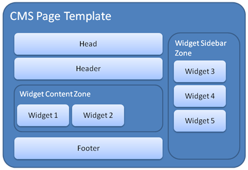

主题包括-Theme includes
ARCHIVED
！注意“归档”
This chapter has not been updated for the current version of Orchard, and has been ARCHIVED.
This design proposal outlines enhancements to the Themes feature to support the following:
此设计提案概述了主题功能的增强功能，以支持以下内容：
This design proposal outlines enhancements to the Themes feature to support the following:
此设计提案概述了对_Themes_功能的增强，以支持以下内容：
- The ability for the application to function independently of the Themes feature, by having default
Views,Content,Scripts,PackagesandWidgetsfolders
1.应用程序独立于_Themes_功能运行的能力，具有默认的Views，Content，Scripts，Packages和Widgets文件夹
- The ability for an applied Theme to override the default files in the application for
Views,Content,Scripts,PackagesandWidgets
2.应用主题覆盖应用程序中“视图”，“内容”，“脚本”，“包”和“小部件”的默认文件的能力
- The ability for an applied Theme to “fall back” to default files when they are not overridden by the Theme
3.当主题未覆盖应用主题时，应用主题“回退”到默认文件的能力
- An include-style helper method syntax for composition of View-related files (either in the applied Theme or in the default Views folder)
4.包含样式的辅助方法语法，用于组合View相关文件（在应用的主题或默认的Views文件夹中）
Theme Overrides
主题覆盖
The application defines top-level Content, Views, Scripts, Packages and Widgets folders, which are not related to the applied Theme and allow the application to function independently of the Themes feature.
该应用程序定义了顶级的“Content”，“Views”，“Scripts”，“Packages”和“Widgets”文件夹，这些文件夹与应用的主题无关，并允许应用程序独立于_Themes_功能运行。
In the absence of the Themes feature (or an applied Theme), the application will use the files in these directories to serve the UI for the application.
如果没有_Themes_功能（或应用的主题），应用程序将使用这些目录中的文件来为应用程序提供UI。
Themes override the default files in the application by specifying files for Content, Views, Scripts and Widgets under the Theme folder. For example, if the application contains a ~/Views/Login.aspx page, the Blue Theme may override the rendering for this page by specifying a custom ~/Themes/Blue/Views/Login.aspx page.
主题通过在Theme文件夹下指定Content，Views，Scripts和Widgets的文件来覆盖应用程序中的默认文件。例如，如果应用程序包含〜/ Views / Login.aspx页面，则蓝色主题可以通过指定自定义的〜/ Themes / Blue / Views / Login.aspx页面来覆盖此页面的呈现。
The View Engine will look to the currently applied Theme to resolve files before ”falling back” to the default Views folder. Overrides allow a theme to only specify the files that require customization by the Theme, instead of requiring Themes to duplicate every file in the application.
View Engine将查看当前应用的主题，以便在“回退”到默认的Views文件夹之前解析文件。覆盖允许主题仅指定需要由主题进行自定义的文件，而不是要求主题复制应用程序中的每个文件。
The override feature can dramatically simplify some theme definitions - a simple Theme may only need to override the header and style sheet for the application, so it would only need to specify ~/Views/Header.aspx and ~/Styles/Site.css.
覆盖功能可以大大简化一些主题定义 - 一个简单的主题可能只需要覆盖应用程序的标题和样式表，因此它只需要指定〜/ Views / Header.aspx和〜/ Styles / Site .css。
The override feature can also simplify upgrading the application to a newer version, since it allows the default files of the application to be independently updated, while preserving Theme customizations.
覆盖功能还可以简化将应用程序升级到更新版本，因为它允许独立更新应用程序的默认文件，同时保留主题自定义。
Note: Serving static files needs to be as fast as possible and the overhead of running any code on top of the web server's tends to be prohibitively high in comparison to the benefits.
注意：服务静态文件需要尽可能快，并且与优点相比，在Web服务器上运行任何代码的开销往往过高。
For this reason, the helper APIs presented here will directly generate URLs that directly map to the physical location of the resource files instead of, for example, generating a route-based URL that could be dynamically resolved later.
因此，此处提供的帮助程序API将直接生成直接映射到资源文件的物理位置的URL，而不是生成可以在以后动态解析的基于路由的URL。
Where that becomes problematic is that there are a few places, such as stylesheets, that are themselves static resources but that must reference other static resources (typically background images).
存在问题的地方是有一些地方，例如样式表，它们本身就是静态资源，但必须引用其他静态资源（通常是背景图像）。
Because the stylesheet is itself a static resource (it is possible to serve an aspx as the stylesheet but this is confusing and breaks IntelliSense), it cannot call into the helpers and must reference its dependencies using URLs that are relative to itself.
因为样式表本身就是一个静态资源（可以将aspx作为样式表提供，但这会令人困惑并打破IntelliSense），因此它无法调用助手，必须使用相对于自身的URL来引用其依赖项。
This means in turn that the dependencies in question must be physically at the place that the stylesheet points to.
这反过来意味着所涉及的依赖关系必须在物理表指向的位置。
This of course puts a limitation on resource fallback: you cannot override just the stylesheet, you also need to copy everything it depends on.
这当然会限制资源回退：您不能只覆盖样式表，还需要复制它所依赖的所有内容。
Issue: In cases where the page is output-cached, adding or removing a file in the theme might not have immediate effect as the cached page is still pointing at the previously resolved resource. This could be fixed by "touching" the page or by doing more elaborate management of cache dependencies.
问题：如果页面是输出缓存的，则在主题中添加或删除文件可能不会立即生效，因为缓存页面仍指向先前解析的资源。这可以通过“触摸”页面或通过对缓存依赖性进行更精细的管理来解决。
Display template overrides
显示模板覆盖
Display and editor templates are typically defined in a module under ~/Packages/[PackageName]/Views/DisplayTemplates/[items|parts]/[PackageName].[ItemOrPartName].ascx.
显示和编辑器模板通常在〜/ Packages / [PackageName] / Views / DisplayTemplates / [items | parts] / [PackageName]。[ItemOrPartName] .ascx下的模块中定义。
Overriding such a specialized display template is possible and sometimes useful, but it is discouraged, because the theme author can't possibly handle all existing modules. Whenever possible, the markup in the module view should be generic enough to be efficiently styled through CSS.
覆盖这样一个专门的显示模板是可能的，有时是有用的，但是不鼓励，因为主题作者不可能处理所有现有的模块。只要有可能，模块视图中的标记应该足够通用，以便通过CSS有效地设置样式。
For those cases where the theme author or the person who customizes the application needs to override one of the display templates from a core or extension module, he should do so in the current theme under ~/Themes/[ThemeName]/Views/DisplayTemplates/[items|parts]/[PackageName].[ItemOrPartName].ascx. Notice that the only change in the path was to replace ~/Packages/[PackageName] with ~/Themes/[ThemeName].
对于主题作者或自定义应用程序的人需要覆盖核心或扩展模块中的一个显示模板的情况，他应该在当前主题下的〜/ Themes / [ThemeName] / Views / DisplayTemplates中这样做/ [项目|份] / [PACKAGENAME] [ItemOrPartName] .ascx。请注意，路径中唯一的变化是将〜/ Packages / [PackageName]替换为〜/ Themes / [ThemeName]。
Widget Overrides
小部件覆盖
Preliminary: widgets are not yet implemented.
初步：小部件尚未实施。
In order to allow a Theme to override the complete rendering for the application, it is necessary to support the ability for a Theme to override an individual widget's rendering.
为了允许主题覆盖应用程序的完整呈现，有必要支持主题覆盖单个小部件呈现的能力。
This assumes that the Theme author has foreknowledge of which widgets are installed to the application, but in many cases an application will include a default set of widgets that can be assumed to exist.
这假设主题作者预先知道应用程序安装了哪些小部件，但在许多情况下，应用程序将包含可以假定存在的默认小部件集。
An override for a widget is specified by adding a Widgets folder underneath the named folder for the Theme, creating a subfolder for the Widget to override, and copying the widget's view file (.ascx) to the folder.
通过在主题的命名文件夹下添加Widgets文件夹，为要覆盖的Widget创建子文件夹，并将窗口小部件的视图文件（.ascx）复制到该文件夹，可以指定窗口小部件的覆盖。
This file can be customized any way the Theme author sees fit, and the widget engine will use this file instead of the default one supplied with the widget.
可以按主题作者认为合适的方式自定义此文件，并且窗口小部件引擎将使用此文件而不是随窗口小部件提供的默认文件。
Include Methods
包括方法
To enable the override feature to work properly, it is necessary to introduce an indirection for composing View files and including dependent references such as scripts, images, and style sheets.
要使覆盖功能正常工作，必须引入间接组件以编写View文件并包括依赖引用（如脚本，图像和样式表）。
This allows the Theme to reference files in a way that allows the application to resolve dependent file references without depending on a hard-coded physical path.
这允许主题以允许应用程序解析依赖文件引用的方式引用文件，而不依赖于硬编码的物理路径。
This is achieved using helper methods to generate URLs, as described below. It should be noted that an include-style model for composition is decidedly different from the built-in ASP.NET Master Page feature, but is more tailored to the desired audience for Theme developers, namely HTML designers that may not be familiar with the intricacies of the ASP.NET programming model. The assumption is that includes are likely to be more immediately understandable by this audience.
这是使用辅助方法生成URL来实现的，如下所述。应该注意的是，包含样式的合成模型与内置的ASP.NET Master Page_功能明显不同，但更适合主题开发人员所需的受众，即可能不熟悉错综复杂的HTML设计人员ASP.NET编程模型。假设这些观众可能更容易理解_includes。
View composition relies on an Html.Zone helper method that defines named zones in the views. Several providers can take advantage of the named zones, for example an include provider that resolves the appropriate View file (either local to the Theme or one of the default application files) and includes it, or a widget provider that injects widgets into zones.
视图组合依赖于Html.Zone辅助方法，该方法在视图中定义命名区域。多个提供程序可以利用命名区域，例如解析相应View文件（包括主题本地或其中一个默认应用程序文件）并包含它的include提供程序，或者将小部件注入区域的窗口小部件提供程序。
Zones can include named subsections that enable the insertion of positioned contents. By default, all zones come with two subsections, before and after, that enable the insertion of contents at the beginning and end of the zone. An example of a zone with named subsections is:
区域可以包括能够插入定位内容的命名子部分。默认情况下，所有区域都有两个子节，before和after，可以在区域的开头和结尾插入内容。具有命名子部分的区域的示例是：
<head>
<meta http-equiv="Content-Type" content="text/html;charset=utf-8" />
<title><%=Html.Title() %></title><%
Html.Zone("head", ":metas :styles :scripts"); %>
</head>
In this example, a head zone is injected into the head tag, and it defines subsections for metas, stylesheets and scripts. This is used to inject meta-tags, registered styles and scripts.
在此示例中，头部区域被注入头部标签，它定义了_metas_，_stylesheets_和_scripts_的子部分。这用于注入元标记，已注册的样式和脚本。
Example document and layout files follow:
示例文档和布局文件如下：
document.aspx:
<%@ Page Language="C#" Inherits="System.Web.Mvc.ViewPage<BaseViewModel>" %>
<%@ Import Namespace="Orchard.Mvc.ViewModels"%>
<%@ Import Namespace="Orchard.Mvc.Html"
%><!DOCTYPE html>
<html>
<head>
<meta http-equiv="Content-Type" content="text/html;charset=utf-8" />
<title><%=Html.Title() %></title><%
Html.Zone("head", ":metas :styles :scripts"); %>
</head>
<body><%
Html.ZoneBody("body"); %>
</body>
</html>
Note: The document file is almost never overridden by the theme.
注意：主题几乎不会覆盖文档文件。
layout.ascx:
<%@ Control Language="C#" Inherits="System.Web.Mvc.ViewUserControl<BaseViewModel>" %>
<%@ Import Namespace="Orchard.Mvc.ViewModels"%>
<%--
name: Sample layout template
zones: Head, Header, Content, Right sidebar, Footer
--%><%
Html.RegisterStyle("site.css");
Html.RegisterScript("MyScript.js");
Model.Zones.AddRenderPartial("header");
Model.Zones.AddRenderPartial("footer");
%>
<div class="page">
<img src="<%= Html.ContentFolderUrl("images/banner.jpg") %>" alt="Banner"/>
<img src="<%= Html.Theme("Logo") %>" alt="Logo"/>
<div id="header"><%
Html.Zone("header");
Html.Zone("menu"); %>
</div>
<div id="main"><%
Html.ZoneBody("content");
%></div>
<div id="rightSidebar"><%
Html.Zone("right sidebar", "UnorderedListLayout")
%></div>
<div id="footer"><%
Html.Zone("footer");
%></div>
</div>
Note
！注意
in this example, some contents are inlined but in a real template those would really be in partial views.
In this example, the calls to `Html.Zone` declare zones on the page where components will be able to inject contents and widgets.
For the header and footer zones, calls to AddRenderPartial will try to find a partial view with the same name (without its extension) as the zone (first in the theme, then in the top views) and will include it if it's found.
对于页眉和页脚区域，对“AddRenderPartial”的调用将尝试查找具有相同名称（没有其扩展名）的部分视图作为区域（在主题中的第一个，然后在顶视图中）并且如果找到它将包括它。
The included files can themselves contain calls to Html.Zone() for nested composition.
包含的文件本身可以包含对嵌套合成的Html.Zone（）的调用。
Issue: when new zones are being added by included partial view, how will the admin UI discover them?
问题：当通过包含的部分视图添加新区域时，管理UI将如何发现它们？
The page also contains specialized calls to other APIs that will be detailed below.
该页面还包含对其他API的专门调用，将在下面详述。
Open Issue: Do we need a version of
Html.Zonethat accepts a model?公开问题：我们需要一个接受模型的
Html.Zone版本吗？
How many overloads of RenderPartial do we want to repeat?
我们想要重复多少次RenderPartial重载？
Question: includes will be so common that we could consider having a shortcut like we have for localization.
Zone("Content")orZ("Content")?问题：包含将是如此常见，以至于我们可以考虑使用像我们本地化的快捷方式。
区（“内容”）或Z（“内容”）？
The contents of each include file should be semantically complete HTML.
每个包含文件的内容应该是语义上完整的HTML。
No separation of opening and closing tags into separate file should exist. When this looks necessary, the surrounding markup should be moved to the parent file.
不应将开始和结束标签分离为单独的文件。如果看起来有必要，应将周围的标记移动到父文件。
Html.Title
Html.Title
A special helper that injects the page title.
一个注入页面标题的特殊帮助器。
Html.RegisterScript
Html.RegisterScript
Registers a JavaScript file for inclusion by Html.Zone("head", ":metas :styles :scripts"). This helper method accepts as input a path that is relative to the root Scripts directory (of either the theme or root application).
注册一个JavaScript文件，包含在`Html.Zone（“head”，“：metas：styles：scripts”）中。此辅助方法接受相对于根Scripts目录（主题或根应用程序）的路径作为输入。
It registers the script to include but does not render anything immediately. The actual rendering of the script tag will happen when the view calls Html.Zone("head", ":metas :styles :scripts").
它将脚本注册为包含但不立即呈现任何内容。当视图调用Html.Zone（“head”，“：metas：styles：scripts”）时，将发生脚本标记的实际呈现。
The actual URL that will be rendered into the page will be mapped by the web server directly to either the theme or root application Scripts directory without having to run application code.
将呈现到页面中的实际URL将由Web服务器直接映射到主题或根应用程序Scripts目录，而无需运行应用程序代码。
The system will search for the correct physical file to serve in the following order:
系统将按以下顺序搜索正确的物理文件：
~/Themes/ThemeName/Scripts
1.~ / Themes / ThemeName / Scripts
~/Scripts
2.~ / Scripts
Example:
例：
Html.RegisterScript("myscript.js")
...registers a URL to the first physical file that exists in these locations (in order):
...将URL注册到这些位置中存在的第一个物理文件（按顺序）：
-
/ApplicationName/Themes/ThemeName/Scripts/myscript.js -
/应用程序名称/主题/ THEMENAME /脚本/ myscript.js* -
/ApplicationName/Scripts/myscript.js -
/应用程序名称/脚本/ myscript.js*
Parameters:
参数：
scriptPath [String] - the path to the script file, relative to the root of the Scripts directory.
Return Value:
返回值：
None
没有
Html.RegisterStyleSheet
Html.RegisterStyleSheet
Registers a CSS file for inclusion by Html.Zone("head", ":metas :styles :scripts").
注册一个CSS文件，包含在`Html.Zone（“head”，“：metas：styles：scripts”）中。
This helper method accepts as input a path that is relative to the root Content directory (of either the theme or root application).
此帮助器方法接受相对于根“Content”目录（主题或根应用程序）的路径作为输入。
It registers the stylesheet to include but does not render anything immediately. The actual rendering of the link tag will happen when the view calls Html.Zone("head", ":metas :styles :scripts").
它将样式表注册为包含但不立即呈现任何内容。当视图调用Html.Zone（“head”，“：metas：styles：scripts”）时，会发生链接标记的实际呈现。
The actual URL that will be rendered into the page will be mapped by the web server directly to either the theme or root application Scripts directory without having to run application code.
将呈现到页面中的实际URL将由Web服务器直接映射到主题或根应用程序Scripts目录，而无需运行应用程序代码。
The system will search for the correct physical file to serve in the following order:
系统将按以下顺序搜索正确的物理文件：
~/Themes/ThemeName
1.~ / Themes / ThemeName
~/Themes/ThemeName/Content
2.~ / Themes / ThemeName / Content
~/
3.~ /
~/Content
4.~ / Content
Note: It is not correct (and might result in an exception) to include stylesheets from widgets using this API, since these stylesheets belong in the <head> of the document. Refer to the section entitled “Widget Scripts and Stylesheets” below.
注意：使用此API从小部件包含样式表是不正确的（并且可能导致异常），因为这些样式表属于文档的“
”。请参阅下面标题为“小部件脚本和样式表”的部分。
Example:
例：
Html.RegisterStyleSheet("mystylesheet.css")
...registers a URL to the first physical file that exists in these locations (in order):
...将URL注册到这些位置中存在的第一个物理文件（按顺序）：
-
/ApplicationName/Themes/ThemeName/mystylesheet.css -
/应用程序名称/主题/ THEMENAME / mystylesheet.css* -
/ApplicationName/Themes/ThemeName/Content/mystylesheet.css -
/应用程序名称/主题/ THEMENAME /内容/ mystylesheet.css* -
/ApplicationName/mystylesheet.css -
/应用程序名称/ mystylesheet.css* -
/ApplicationName/Content/mystylesheet.css -
/应用程序名称/内容/ mystylesheet.css*
Parameters:
参数：
styleSheetPath [String] - the path to the CSS file, relative to the root of the Content or theme directory.
Return Value:
返回值：
None
没有
Html.Zone("head", ":metas :styles :scripts")
Html.Zone（“head”，“：metas：styles：scripts”）
We'll have a special provider that recognizes the "Head" zone and generates the script, style and link tags resulting from previous registration by widgets and views. In particular, Html.RegisterScript and Html.RegisterStyleSheet calls result in Html.Include("Head") generating the relevant tags.
我们将有一个特殊的提供程序来识别“头部”区域，并生成由小部件和视图以前注册产生的脚本，样式和链接标记。特别是，Html.RegisterScript和Html.RegisterStyleSheet调用导致Html.Include（“Head”）生成相关标签。
This special provider is also the one that will inject style overrides.
这个特殊的提供者也是注入样式覆盖的提供者。
The widgets can also participate in what gets rendered by this API by exposing their list of scripts and stylesheets (see Widgets).
窗口小部件还可以通过公开脚本和样式表列表来参与此API呈现的内容（请参阅[窗口小部件]（窗口小部件））。
The list of stylesheets and scripts to be included is first processed to remove duplicates, and then the helpers proceeds to rendering the relevant tags.
首先处理要包含的样式表和脚本列表以删除重复项，然后帮助程序继续呈现相关标记。
Parameters:
参数：
name [string] - the name of the zone. May correspond to the name of a partial view, minus the file extension.
subsections [string] - a space-separated list of subsections for the zone. Each subsection name begins with a colon. The ":before" and ":after" subsections always exist no matter what is specified in this parameter.
layout [String] - Optional: the name of the view file that defines the chrome to render between the different items of the zone (to surround individual contents). The chrome template file looks like this:
Preliminary
初步
UnorderedListLayout.ascx:
<@Control language="C#" inherits="System.Web.Mvc.ViewUserControl<List<object>>" %>
<% if (Model.Length > 0) { %>
<% if (Model.Length == 1) { %>
<%= Html.DisplayFor(Model[0]) %>
<% } else {
<ul class="layoutList">
<% foreach(var item in Model) { %>
<li><%= Html.DisplayFor(item) %></li>
<% } %>
</ul>
<% } %>
<% } %>
If no layout file with that name is found, a default layout is used, that is looked for in the template directory, then in the fallback theme.
如果找不到具有该名称的布局文件，则使用默认布局，在模板目录中查找，然后在后备主题中查找。
Html.Theme
Html.Theme
Includes a theme setting.
包括主题设置。
Parameters:
参数：
settingName [String] - the name of the setting to include.
Return Value:
返回值：
A string that contains the value of the setting, or an empty string if it not found.
包含设置值的字符串，如果未找到，则为空字符串。
Default Includes
默认包括
By convention, the pages of the Orchard Commerce application are divided into the following includes.
按照惯例，Orchard Commerce应用程序的页面分为以下几种。
Specific Themes may override and/or define additional include files.
特定主题可以覆盖和/或定义其他包含文件。
Head.ascx
Head.ascx
Contains meta tags, styles, and scripts that should be included in every page of the application. In the example above, the contents of the head file has been inlined so that the file contains examples of each include method. In a real template, this contents would be in head, and the template itself would have a simple Html.Include("head").
包含应包含在应用程序的每个页面中的元标记，样式和脚本。在上面的示例中，_head_文件的内容已内联，以便该文件包含每个include方法的示例。在一个真实的模板中，这个内容将在head中，模板本身将有一个简单的Html.Include（“head”）。
Header.ascx
Header.ascx
Contains header content that is common all pages (site name banner image, navigation menus, login/logout link, etc).
包含所有页面通用的标题内容（站点名称标题图像，导航菜单，登录/注销链接等）。
Note: in the example above, the banner has been put in the template itself but it shouldn't be in a real template.
注意：在上面的示例中，横幅已放入模板本身，但不应位于真实模板中。
Footer.ascx
Footer.ascx
Contains footer content that is common to all pages.
包含所有页面通用的页脚内容。
The overall composition of views might result in something like this:
视图的整体构成可能会导致如下所示：

Content and Script Includes
内容和脚本包含
Supporting Theme overrides for Views, Scripts, and Content enables Theme authors to simply copy files from the default application's top-level folders into the Theme's folder structure.
支持视图，脚本和内容的主题覆盖使主题作者可以简单地将文件从默认应用程序的顶级文件夹复制到主题的文件夹结构中。
However, a given View page might have references to other files - in particular, content such as images and stylesheets, and scripts.
但是，给定的View页面可能引用了其他文件 - 特别是图像和样式表等内容以及脚本。
In order to keep these references intact when copying files to the Theme, it is necessary to support helper methods for referencing files from the Content and Scripts directories, namely Html.ContentFolderUrl, Html.RegisterStylesheet and Html.RegisterScript.
为了在将文件复制到主题时保持这些引用不变，有必要支持辅助方法来引用Content和Scripts目录中的文件，即Html.ContentFolderUrl，Html.RegisterStylesheet和Html .RegisterScript。
These methods take as input a path relative to the local Content or Scripts folder for the Theme (or Widget) and return a resolved URL.
这些方法将相对于Theme（或Widget）的本地Content或Scripts文件夹的路径作为输入，并返回已解析的URL。
For example, in a Theme, a particular View page might have code as follows:
例如，在主题中，特定的View页面可能包含如下代码：
<a href="<%=Url.Action("Show", "Cart") %>"><img
src="<%=Html.ContentFolderUrl("images/cart.gif") %>"
alt="Cart" /></a>
The Html.ContentFolderUrl returns a path to /ApplicationName/Themes/MyCurrentTheme/images/cart.gif, /ApplicationName/Themes/MyCurrentTheme/Content/images/cart.gif, /ApplicationName/images/cart.gif or /ApplicationName/Content/images/cart.gif, whichever is found first when the API is called. This relies on IIS static file handling to serve the content, for performance reasons.
Html.ContentFolderUrl返回/ ApplicationName / Themes / MyCurrentTheme / images / cart.gif，/ ApplicationName / Themes / MyCurrentTheme / Content / images / cart.gif，/ ApplicationName / images / cart的路径。 gif或/ ApplicationName / Content / images / cart.gif，无论哪个在调用API时首先找到。出于性能原因，这依赖于IIS静态文件处理来提供内容。
<a href="/Cart/Show"><img src="/ContentFiles/images/cart.gif" alt="Your cart" /></a>
A similar Html.RegisterScriptUrl is supported for script file references, which searches under the appropriate Scripts folder (first in the Theme, then in the top-level Scripts folder for the application).
脚本文件引用支持类似的Html.RegisterScriptUrl，它在相应的Scripts文件夹下搜索（首先在Theme中，然后在应用程序的顶级Scripts文件夹中）。
In general, if a content or script file is meant to be Theme-overridable, these Include methods should be used to reference the file path.
通常，如果内容或脚本文件是主题可覆盖的，则应使用这些“Include”方法来引用文件路径。
In the example above, the View page might be in the top-level Views folder and the Theme overrides the cart.gif image in the Theme's Content/images folder.
在上面的示例中，View页面可能位于顶级Views文件夹中，Theme会覆盖Theme的Content / images文件夹中的cart.gif图像。
Conversely, the View page might be overridden by the Theme, but the cart.gif image remains in the top-level Content/images folder.
相反，View页面可能会被主题覆盖，但cart.gif图像仍保留在顶级Content / images文件夹中。
In either case, the references will resolve correctly at runtime.
在任何一种情况下，引用都将在运行时正确解析。